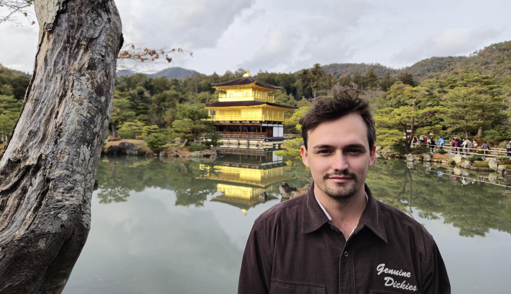

Bailey Whitbread
I am an Australian graduate student in mathematics. My CV is here and my GitHub is here.

My advisor is Geordie Williamson. My past advisors are Masoud Kamgarpour and Ole Warnaar.
Work
Paper
Counting points on generic character varieties, to appear in Mathematical Research Letters
MPhil thesis
Arithmetic Geometry of Character Varieties
GitHub package
CharacterVarieties.jl
MPhil poster
Topology of Representation Spaces via Arithmetic
Bachelors thesis
Hecke Algebras and Gelfand Pairs in Representation Theory
Talks
A purity conjecture for character varieties Representation Theory Down Under
Counting points on character varieties Joint Meeting of the NZMS, AustMS and AMS
This talk was runner-up for most outstanding talk by a student at the joint meeting
Character varieties APAC Seminar
Polynomials in the variable \(p\) AMSI Summer School
Character varieties in arbitrary type Annual Meeting of the AustMS
Arithmetic geometry of representation spaces Glasgow Algebra and Number Theory Seminar
Counting points on the representation variety Annual Meeting of the AustMS
Hecke algebras and Gelfand pairs in representation theory Undergraduate Final Talk
Tutoring
MATH3303 (lead tutor, 5 years),
MATH2401 (lead tutor, 2 years),
MATH1071 (lead tutor, 2 years),
MATH1061 (lead tutor and lecture tutor, 2 years)
+ marked final exams for 1st and 2nd year maths courses (5 years)
Service
Co-organiser for the UQ Maths Graduate Student Seminar (2 years)
Co-organiser for a lecture series on the Weil conjectures
Marker for the Simon Marais Mathematics Competition
Marker for the UQ/QAMT Problem Solving Competition
Question drafter for the UQ Maths Relay (4 years)
Tutor for the UQ Queensland Mathematics Summer School
President and vice president of the UQ Mathematics Students Society (2 years)
About Me
I play Tetris. You can find me on TETR.IO. Now I play The Grand Master series.
[Photo]
Matrix Workshop on AI for Mathematics
[Photo]
Heron Island Workshop on Geometry and Representation Theory
![[Photo]](files/25_matrix.jpg){kind=link}
![[Photo]](files/21_heron.png){kind=link}